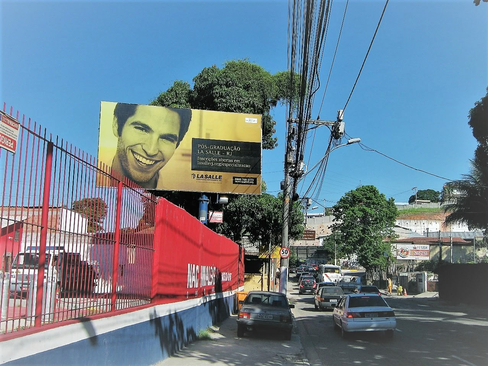

Proposta do fornecedor (via Edilson) pro Grupo ROB · valores e pontos disponíveis em outubro/2026

Todos iluminados
Custo inicial
R$ 1.250
Mensalidade · Centro e Zona Sul
R$ 3.750
Mensalidade · outros pontos
R$ 2.750
Custo inicial
R$ 2.500
Mensalidade · contrato de 3 meses
R$ 2.750
Mensalidade · contrato de 6 meses
R$ 2.550
| Código | Endereço · referência | Sentido | Medida | Luz | |
|---|---|---|---|---|---|
NIT-030.1 | sentido SG RJ 104 Km 1310 Km 1,3, Fonseca Niteroi | São Gonçalo · Medidas: 10,00 x 5,00 Iluminada: Não | 10 x 5 m | não | mapa |
NIT-085.1 | Rua Jansen de Melo 171 Centro Niterói, CEP 24.030-221 | Rio de Janeiro · Medidas: 6,00 x 3,00 Iluminada: Sim | 6 x 3 m | 💡 sim | mapa |
NIT-094.1 | Frente ao Niteroi Shopping | Icaraí · Esquerda | 5,90 x 3,90 m | não | mapa |
NIT-120.1 | Av. Almte Ari Parreira 100 Icaraí Niterói , CEP 24.230-320 | Praia Icaraí · Medidas: 7,00 x 3,60 Iluminada: Sim | 7 x 3,60 m | 💡 sim | mapa |
NIT-210.2 | Região Oceânica Estr Frco da Cruz Nunes, 4901, Piratininga Niterói RJ CEP 24.350-310 | Reg. Oceânica · Medidas: 7,00 x 3,60 Iluminada: Sim | 7 x 3,60 m | 💡 sim | mapa |
NIT-217.1 | Região Oceânica Rua FrancelinoBarcelos, 9 | Itaipu · Medidas: 5,35 x 3,40 Iluminada: Sim | 5,35 x 3,40 m | 💡 sim | mapa |
NIT-221.1 | Região Oceânica Av. 10 , 262 frente posto BR | Charitas · Direito | 6 x 3 m | 💡 sim | mapa |
NIT-230.2 | Região Oceânica Estr Frco da Cruz Nunes, 5590, Piratininga Niterói RJ CEP 24.350-310 | Centro · Esquerda - Rua | 7 x 3,60 m | 💡 sim | mapa |
NIT-230.5 | Região Oceânica Estr Frco da Cruz Nunes, 5590, Piratininga Niterói RJ CEP 24.350-310 | Reg. Oceânica · Esquerda | 7 x 3,60 m | 💡 sim | mapa |
NIT-240.1 | Região Oceânica Estr Frco da Cruz Nunes, 388, Piratininga Niterói RJ CEP 24.350-310 | Icaraí · Medidas: 7,00 x 3,60 Iluminada: Sim | 7 x 3,60 m | 💡 sim | mapa |
NIT-255.2 | Região Oceânica RJ 108 Av. Ewerton Xavier, 2748 | Itaipu · Medidas: 7,00 x 3,60 Iluminada: Sim | 7 x 3,60 m | 💡 sim | mapa |
NIT-350.2 | Região Oceânica Estr Frco da Cruz Nunes, 3095, Piratininga Niterói RJ CEP 24.350-000 | Centro · Direita - Rua | 7 x 3,60 m | 💡 sim | mapa |
NIT-360.2 | Região Oceânica Estr Frco da Cruz Nunes, 1049, Monam Grande Niterói RJ CEP 24.350-340 | Reg. Oceânica · Esquerda - Rua | 7 x 3,60 m | 💡 sim | mapa |
NIT-370.3 | Estr. Caetano Monteiro 790, Lgo da Batalhaa Niterói RJ CEP 24.320-570 | Pendotiba Centr · Esquerda - Rua | 6 x 3,60 m | 💡 sim | mapa |
NIT-375.1 | Região Oceânica Estr.Caetano Monteiro,174 esquina com Amadeu Gomes | Pendotiba · Medidas: 7,00 x 3,60 Iluminada: Sim | 7 x 3,60 m | 💡 sim | mapa |
NIT-390.1 | Estr Leonor da Gloria 29 Lgo Batalha, CEP 24.320-300 Niterói RJ | Centro · Medidas: 7,00 x 3,60 Iluminada: Sim | 7 x 3,60 m | 💡 sim | mapa |
NIT-419.3 | RJ 104 Km 3 Casa Caipira | Niterói · Direita | 7 x 3,60 m | 💡 sim | mapa |
NIT-421.1 | sentido SG RJ 104 Rod Amaral Peixoto 1305 Km 3,5, Baldeador Niteroi CEO 24.140-380 | São Gonçalo · Medidas: 10,00 x 3,00 Iluminada: Não | 10 x 3 m | não | mapa |
NIT-421.2 | RJ 104 Rod Amaral Peixoto 1305 Km 3,5, Baldeador Niteroi CEP 24.140-380 | Niterói · Medidas: 10,00 x 3,00 Iluminada: Não | 10 x 3 m | não | mapa |
NIT-790.1 | Av do Contorno 2115 Barreto Niterói RJ, CEP 24.210-105 | Niterói · Medidas: 20,00 x 3,00 Iluminada: Não | 20 x 3 m | não | mapa |
NIT-790.2 | Av do Contorno 2115 Barreto Niterói RJ, CEP 24.210-105 | Niterói · Medidas: 10,00 x 3,00 Iluminada: Não | 10 x 3 m | não | mapa |
NIT-790.5 | sentido SG Av do Contorno 2115 Barreto Niterói RJ, CEP 24.210-105 | São Gonçalo · Direita | 10 x 3 m | não | mapa |
NIT-790.9 | Av do Contorno 2115 Barreto Niterói RJ, CEP 24.210-105 | Niterói · Medidas: 10,00 x 3,00 Iluminada: Não | 10 x 3 m | não | mapa |
NIT-820.1 | sentido SG Av do Contorno 694 Barreto Niterói RJ, CEP 24.110-075 | São Gonçalo · Medidas: 7,00 x 3,60 Iluminada: Sim | 7 x 3,60 m | 💡 sim | mapa |
📄 PDF completo com as fotos de cada ponto · Niterói e acessos
| Código | Endereço · referência | Sentido | Medida | Luz | |
|---|---|---|---|---|---|
ARA-916.3 | Região dos Lagos RJ 124 Via Lagos 557 Km 41, Araruama - CEP 28.970-000 RJ | Buzios · Esquerda | 10 x 5 m | não | mapa |
ARA-916.5 | Região dos Lagos RJ 124 Via Lagos 565 Km 41, Araruama - CEP 28.970-000 RJ | Buzios · Medidas: 10,00 x 5,00 Iluminada: Não | 10 x 5 m | não | mapa |
ARA-918.3 | Região dos Lagos RJ 124 Km 37,5 | Buzios · Direita | 10 x 5 m | não | mapa |
IGU-912.1 | Região dos Lagos RJ 124 Via Lagos 7.622 Km 52, Iguaba Grande CEP 28.960-000 RJ | Buzios · Esquerda - Rua | 10 x 5 m | não | mapa |
IGU-915.3 | Região dos Lagos RJ 124 Via Lagos 783 Km 45, Iguaba Grande CEP 28.970-000 RJ | Buzios · Medidas: 21,00 x 5,00 Iluminada: Não | 21 x 5 m | não | mapa |
ITA-968.1 | RJ 116 Rod.Pres.João Goulart Km 4, Chacara Bele Vista Itaborai - RJ | Friburgo · Medidas: 10,00 x 5,00 Iluminada: Não | 10 x 5 m | não | mapa |
ITA-980.9 | Rod Gov Mario Covas Km 283 Itavile Itaboraí - RJ | Buzios · Esquerda | 10 x 5 m | não | mapa |
ITA-990.1 | Rod. Gov. Mário Covas, 699, Ampliação Itaboraí - RJ | Rio de Janeiro · Esquerda - Rua | 10 x 5 m | não | mapa |
ITA-994.2 | Rod. Gov. Mário Covas, 814, Vila Gabriela Itaboraí - RJ | Rio de Janeiro · Direita | 21 x 5 m | não | mapa |
NIT-790.1 | Av do Contorno 2115 Barreto Niterói RJ, CEP 24.210-105 | Niterói · Medidas: 20,00 x 3,00 Iluminada: Não | 20 x 3 m | não | mapa |
NIT-790.5 | sentido SG Av do Contorno 2115 Barreto Niterói RJ, CEP 24.210-105 | São Gonçalo · Direita | 10 x 3 m | não | mapa |
NIT-800.2 | sentido SG Av do Contorno 1.837 Barreto Niterói RJ | São Gonçalo · Direita | 10 x 3 m | 💡 sim | mapa |
NIT-820.1 | sentido SG Av do Contorno 694 Barreto Niterói RJ, CEP 24.110-075 | São Gonçalo · Medidas: 7,00 x 3,60 Iluminada: Sim | 7 x 3,60 m | 💡 sim | mapa |
NIT-875.2 | Rod Amaral Peixoto 10 Km 11, Itaocaia Valley Niterói RJ CEP 24.942-395 | Niteroi · Direita - Rua | 10 x 5 m | não | mapa |
RBO-924.1 | RJ 124 Via Lagos 1069 Km 23, Palmital Rio Bonito RJ Cep 28.800-000 | Buzios · Esquerda - Rua | 10 x 5 m | não | mapa |
RBO-928.5 | RJ 124 Via Lagos 888 Km 17, Eng.Castelo Rio Bonito RJ Cep 28.800-000 | Buzios · Medidas: 10,00 x 5,00 Iluminada: Não | 10 x 5 m | não | mapa |
RBO-940.2 | BR 101 Rod Gov Mario Covas Km 269, Ipê Rio Bonito RJ | Buzios · Esquerda - Rua | 10 x 5 m | não | mapa |
TAN-948.0 | BR 101 Rod Gov Mario Covas Km 276 Santo Antonio Tangua RJ | Rio de Janeiro · Esquerda | 10 x 5 m | não | mapa |
TAN-948.8 | BR 101 Rod Gov Mario Covas 284 Km 278, Bandeirante Tanguá RJ | Buzios · Direita | 10 x 5 m | não | mapa |
Reforçando as áreas de interesse que o Matheus comentou na reunião: Tijuca, Jacarepaguá, Recreio e arredores.